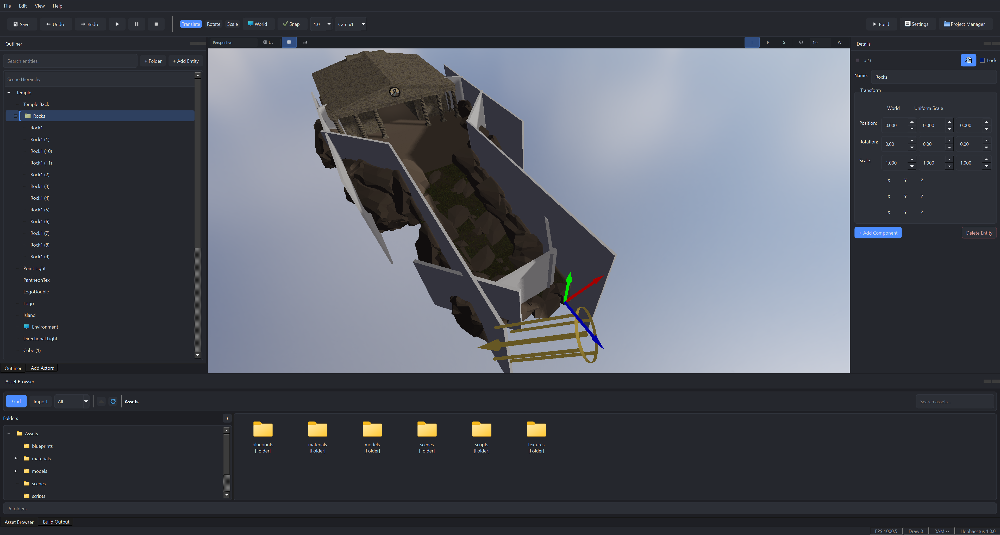
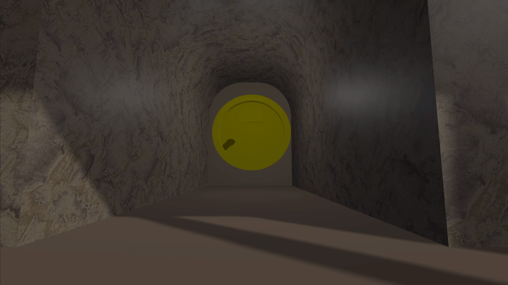
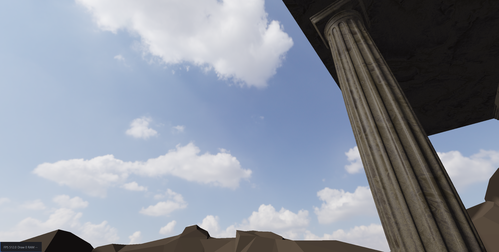
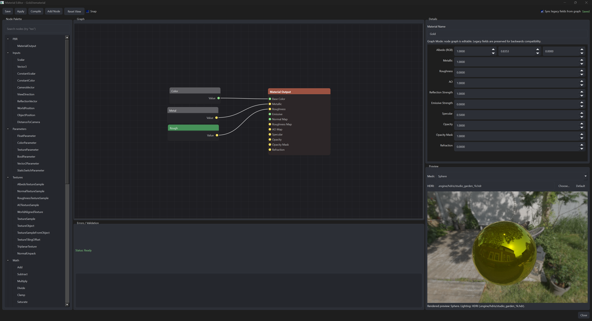
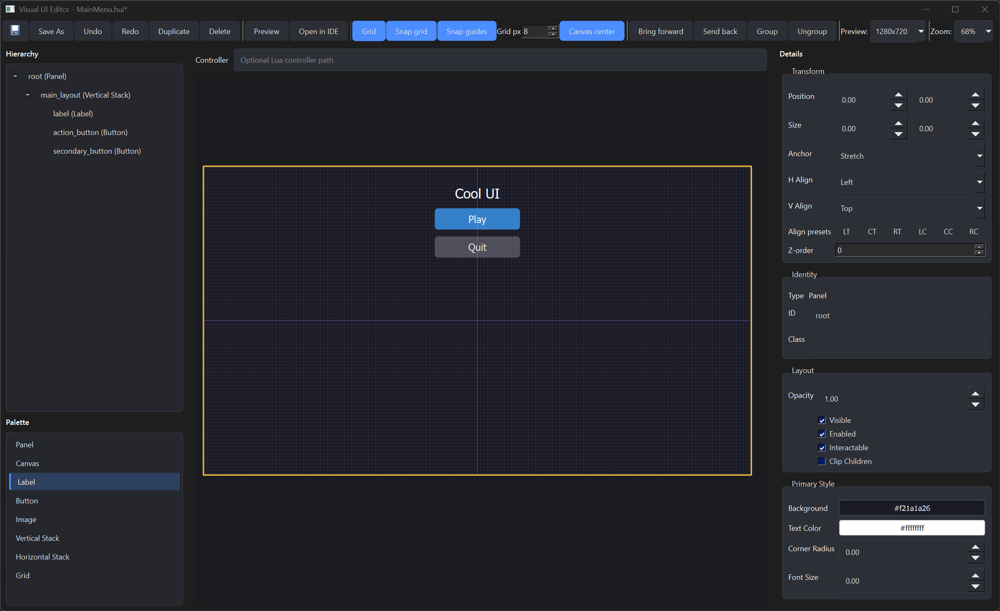

Developer control without unnecessary friction
Developers should be able to understand and extend the engine. Ownership stays explicit, and common tasks should not require fighting opaque systems.
Custom C++ Game Engine
A game engine and development environment designed, architected, and implemented from the ground up for creating games.

The project
Hephaestus is an actively developed game engine. It is written in C++ as a serious, extensible engine and development environment: a runtime, a renderer, an editor, an asset pipeline, and the workflows that join them.
The aim is one environment for making games. Scene editing, content import, scripting, debugging, packaging, and extension are designed as parts of the same system, so a project does not have to be assembled from disconnected libraries and tools. In that sense Hephaestus sits in the same category as Unreal, Unity, Godot, and modern proprietary studio engines. It is the technology foundation for Olympus Game Studios, and it is still being built. Substantial systems are already operational. Major areas of the engine continue to expand.
Research and experimentation are part of how the engine moves, especially in rendering and architecture. That work serves the engine, which is being built so games can be made in it.
How it is built
Developers should be able to understand and extend the engine. Ownership stays explicit, and common tasks should not require fighting opaque systems.
Everyday workflows should work out of the box. Advanced work still has a path into lower-level systems when the defaults are not enough.
Authoring, debugging, profiling, automation, and packaging belong to the same environment as the game that ships.
Hephaestus is being designed around tools and techniques that were not available when many established engines set their core architecture, including structured automation for external tools and agents.
Systems are designed with performance and future scale in mind from the start, including the renderer, the runtime, and the split between editor and packaged game.
Andrew Zambazos
I created Hephaestus and I lead its development. My role is Creator & Lead Engine Architect: I set the technical direction, design the architecture, and implement the major engine systems.
That covers both the runtime and the editor. I define how the subsystems interact, design the tooling and the development workflows around them, and research and prototype rendering and engine technology as the project grows. The long-term technical vision of the engine is part of the job.
Initiated Hephaestus and continue to lead it as an ongoing engine project.
Define the architecture and the direction of the engine as systems are added.
Design and implement major runtime, rendering, gameplay, and content systems.
Build the desktop editor alongside the runtime, including its workflows and diagnostics.
Design the asset pipeline, editor commands, and the day-to-day path from content to a running game.
Prototype rendering and engine technology, then fold what holds up into the architecture.
Decide how runtime, editor, plugins, automation, and content systems talk to each other.
Responsible for where Hephaestus is going as a game engine, beyond the systems already in place.
Structure
Hephaestus is organised in layers, with a deliberate split between the editor and the packaged runtime. The editor, automation, and plugins sit above a shared runtime, scene model, and renderer. Packaged games keep the editor behind them.
Layer 01
A Qt desktop editor for scenes, hierarchy, inspection, the viewport, assets, prefabs, play mode, and diagnostics.
Layer 02
HephaestusAutomationCore and HephaestusMcpCore. External tools operate the editor through a structured API. Packaged-runtime automation is present only where it is explicitly enabled.
Layer 03
A versioned public Plugin API. Major editor and engine behaviour can be added without modifying the core.
Layer 04
Lua scripting, input, physics integration and raycasting, and character and controller systems.
Layer 05
Entities and scenes, serialization, prefabs, asset management and importing, and content mounting.
Layer 06
An evolving Vulkan rendering path: materials, lighting, shadows, skeletal meshes, GPU skinning, and runtime UI.
Layer 07
A custom C++ runtime and a packaged game runtime, kept distinct from the editor.
The engine’s own runtime, written for the game rather than borrowed as a framework around other libraries.
Worlds are built from entities organised into scenes.
Editor systems stay out of the packaged game.
Scenes save and load as engine data.
Reusable objects with their own authoring workflow.
Importing and tracking the content the editor and runtime share.
A runtime path for a packaged game, separate from the editor process.
Extension points that keep new functionality out of the core.
A dedicated input system for gameplay and tools.
Gameplay logic scripted in Lua against the engine.
Physics integration and raycasting inside the runtime.
Character setup connected through to runtime controller systems.

Graphics
Hephaestus has its own rendering architecture, including a Vulkan-based rendering path. The renderer is in active development. Current work covers the systems below. More advanced techniques are being designed into the architecture so they can be introduced over time.

A Vulkan path is part of the engine’s rendering stack and continues to evolve with it.
Physically based materials, authored in a node graph, with lighting and shadows in the frame.
GPU-driven rendering infrastructure, developed so the renderer can take on more of the frame.
Skinned character rendering, including GPU skinning for animated meshes.
Viewport rendering for the editor, including object identification for selection and tools.
A dedicated UI rendering path for the game, separate from editor interface drawing.

The architecture is being designed so later rendering systems can land on the same foundation. That direction includes modern global illumination, ray tracing, improved reflections, and lighting that can scale. These are upcoming systems. They are part of the plan for the renderer, and they are still ahead of what the engine runs today.
Runtime UI has its own pipeline. Widgets are laid out in a visual editor, with a hierarchy, a canvas, and an inspector, and an optional Lua controller on the interface. That authoring stays on the editor side of the runtime boundary, so game UI still draws through the runtime renderer.

The authored structure of the interface.
Resolves how widgets occupy the screen.
Turns the laid-out tree into draw data.
A runtime path with Vulkan support.
Development environment
Hephaestus includes a custom desktop editor, built with Qt. It is a development environment for the engine, covering scene authoring, content, play mode, and diagnostics. Tooling is treated as engine architecture. The editor is designed with the runtime, and the workflows below are part of how games get made in Hephaestus.
Author worlds directly in the engine.
Navigate the structure of a scene.
Inspect and edit the selected object.
View the scene through the editor camera.
Bring content in and keep it connected to the project.
Build and reuse prefabricated objects.
Configure the project from inside the editor.
Discover and manage extensions from the editor.
Import characters and other source assets into the pipeline.
Structured commands for editor operations.
Tools that follow the current selection and task.
Run the game from the editor.
Inspect what the editor and the running game are doing from the same environment.
Beyond static scenes
Hephaestus renders and drives characters, not only static scenes. Skeletal animation, GPU skinning, character assets, and runtime controllers are part of the engine. Characters import from FBX and GLB, with canonical skeleton handling so compatible meshes can share one skeleton.
Animated skeletons evaluated for the character.
Skinning runs on the GPU from a shared bone palette.
Character source assets enter through the import pipeline.
Character presentation connected to controller systems.
A character can be several independently rendered pieces. Those pieces share one skeleton and one animation state. The pose is evaluated once, then uploaded as one GPU bone palette that every compatible mesh samples.
Extension
Hephaestus has a production-oriented plugin architecture. The goal is to let major engine and editor functionality be added, replaced, or specialised without modifying the engine core. Plugins are discovered and loaded, given controlled access to engine services, and isolated when they fail so one plugin does not take the editor down with it.
What plugins can extend
External control
Hephaestus is built so tools outside the editor can operate it. The underlying feature is a structured automation API. Development agents and other external tools use that API to inspect the project and carry out editor actions. MCP is one interface into the API, alongside the editor integration itself.
The architecture keeps those pieces separate, so editor automation and packaged-runtime automation are explicit choices.
The shared automation layer that describes what external tools are allowed to do.
An MCP interface on top of that API, so agents can speak to the editor through a structured protocol.
Integration that lets external calls drive the desktop editor: scenes, assets, selection, the viewport, and play mode.
Automation against a packaged runtime, available only where it has been explicitly enabled.
Currently exposed
Status: Active Development
Hephaestus is an ongoing engine project. The runtime, scene and asset pipeline, Vulkan rendering path, editor, character system, plugin API, and automation framework are already part of development. Substantial systems are operational, and major areas are still being expanded. The engine is short of a production-complete release.
The next depth is in the renderer and in the workflows around it. Global illumination, ray tracing, improved reflections, and scalable lighting are the direction the rendering architecture is being prepared for. Editor tooling, the character pipeline, and automation continue alongside that. Those rendering goals describe where the engine is going. They are systems still being introduced.
At a glance
Hephaestus is the work of designing and building an integrated engine: runtime, renderer, editor, content pipeline, characters, plugins, and automation.